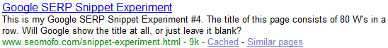

Google Snippet Experiment No. 3
Today I received a random email from a guy named Gerald, who works for a San Francisco search engine marketing company, called Red Bricks Media. This email was particularly unusual (in a good way), because it was from a search marketing agency, but it wasn’t auto-generated or contain link requests.
The email said:
Very cool experiment! And awesome name!
So what would happen if you tested a title of one word “WWWW . . . . . .” with 80 W’s?
“If the title has 71 characters or more, display as many whole words as will fit into the 70 character limit.”
Will it be blank, or cut off one word with “…”?
- Gerald
I found this to be an interesting question–one worthy of some experimentation. So I took action. First, I changed the title of this page to 80 W’s (no spaces) and updated the description tag. Then I went over to www.redbricksmedia.com, to see if it looks like a reputable website–one that I would be confident linking to. The site looks good, the code is very clean, and the landing pages appear to have been carefully optimized by hand. Frankly, I’m impressed. It’s rare to find an SEO/SEM site that actually “practices what it preaches.” So there you have it: the natural birth of an editorial-grade link.
Anyways… now I’m going to sit back and wait for Google to crawl this page again. I’ll be keeping my eye on two things: (1) the new title that Google displays in its SERPs for this page, and (2) redbricksmedia.com’s rankings for the phrases [San Francisco search engine marketing] (currently 3rd) and [San Francisco search engine marketing company] (currently 4th).
By the way, here is my prediction, from the snippet tool:
Updated: 3/30/2009
Ok, so my prediction was wrong. Below is a screen capture of what Google is actually showing in the search results.
Here is the actual result, from the SERP:

The question is… where did Google pull “Google SERP Snippet Experiment” from? There are 2 possible sources that immediately come to mind. The first possibility is obvious to everyone: the H1 content at the top of this page. The second possibility is only obvious to me: the original <title> of this page was also “Google SERP Snippet Experiment.” So before I try to come up with any other possible sources of the latest snippet title, I’m going to change the H1 tag slightly and see if the snippet gets updated to match it. I’m simply adding “No. 1″ to the top H1 element.
It would be interesting if Google is actually pulling this latest snippet title from this page’s original <title>, because it would suggest that Google has archived at least 3 historical copies of this page. This page’s <title> history is something like this:
2/1/2009:
Google SERP Snippet Experiment
2/9/2009:
WE WILL WIN WWW WARS WHILE THE WORLD WIDE WEB WARRIORS WEAR WHITE WIGS
3/4/2009:
WWWWWWWWWWWWWWWWWWWWWWWWWWWWWWWWWWWWWWWWWWWWWWWWWWW AWESOME MOFO TOOL!
3/24/2009:
WWWWWWWWWWWWWWWWWWWWWWWWWWWWWWWWWWWWWWWWWWWWWWWWWWWWWWWWWWWWWWWWWWWWWWWWWWWWWWWW
Google displayed all of these titles in the SERPs, up until this last one (implemented on 3/24/2009), at which time it opted instead to display [what might be] the title from 2/1/2009.
Updated: 6/28/2009
I’m finally getting around to updating this page! My last update ended with the following question:
Why was Google showing Google SERP Snippet Experiment for this page’s SERP title? Was it using the <h1> tag content or was it using an old title from its archive?
The answer is… it was using the <h1> tag!
After seeing the results of my previous snippet experiment, I changed this page’s h1 tag from this:
Google SERP Snippet Experiment
to this:
Google SERP Snippet Experiment No. 1.
The following screen capture shows that Google soon updated their SERP with my new h1 content:
{kind=link}
Here is an interesting side effect from these experiments… some of the data in Google Webmaster Tools has become very difficult to read. Check this out:
Google Webmaster Tools layout error
{kind=link}